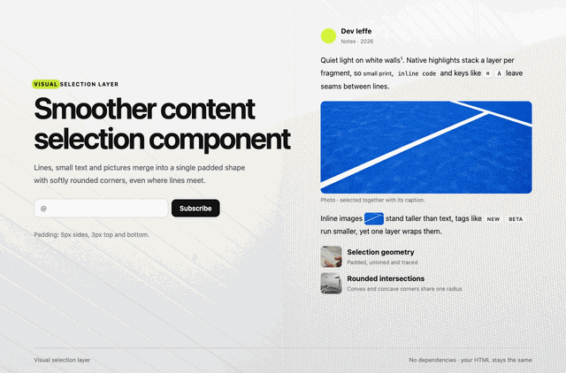

Make every selection lookvisually designed
VisualSelectionLayer turns the browser’s patchy highlight into a smooth, padded, soft layer. Single script, zero dependencies.

Why one layer
The native highlight paints every line and element on its own. Rows overlap, gaps flicker between them, images turn blue and the corners stay sharp. VisualSelectionLayer draws the whole selection as a single shape, so it reads as one clean mark. Plus! It's fully CSS customizable.
One shape, no seams
Lines, words and blocks merge into one outline. Overlaps never double the colour and gaps between rows close up.
- union
- no-overlap
Softer at every corner
Padding and radius apply to outer and inner corners alike, from large headings down to 2px steps beside small print.
- padding
- radius
Fully CSS customizable
Design the selection’s color, padding, radius, image fill and effects with CSS variables, or override the layer styles directly. Add one script or React component; no dependencies.
- vanilla JS
- React
- zero deps
Try it
Explore the preview. Try different colors, effects, merge settings, radius, and padding.
See the Pen VisualSelectionLayer by Dev Ieffe on CodePen.
Install
HTML
<script src="VisualSelectionLayer.js"></script>:root {
--selection-color: #d4f53c;
--selection-radius: 9px;
--selection-effect: fade;
}Copy html/VisualSelectionLayer.js into your project.
React
npm i reactimport VisualSelectionLayer
from "./VisualSelectionLayer.js";
<VisualSelectionLayer vars={{ color: "#d4f53c" }} />Copy react/VisualSelectionLayer.js into your project.